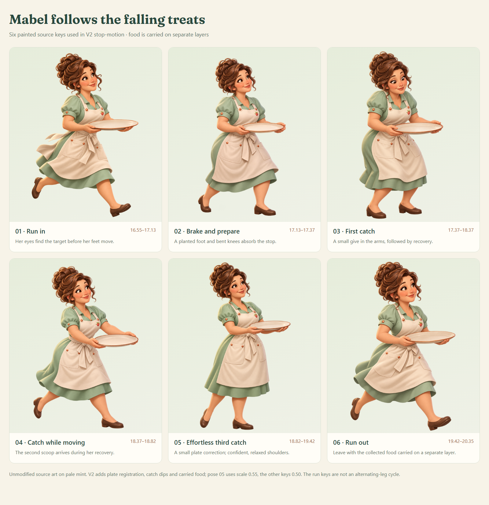

Private review · 30 seconds
Sugarfall trailer V2
Mabel sees treats falling out of the board and runs to collect them. Her original painted design now appears in six cutout poses.
- Run in and stop beneath the first scoop.
- Catch the next scoop during recovery.
- Make a small reach for the fruit, then leave with the plate.
The ending follows the final game catch with a doughnut settling inside the gold cup. Sugarfall uses the game’s bundled Fraunces font.
Artwork, real paths and ending studies · Download MP4
Painted stop-motion is a trailer overlay. Gameplay stays at normal speed. The supplied music performance remains a private reference pending publication clearance.
